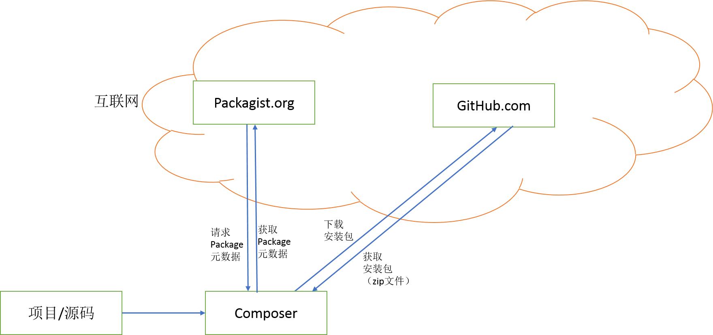
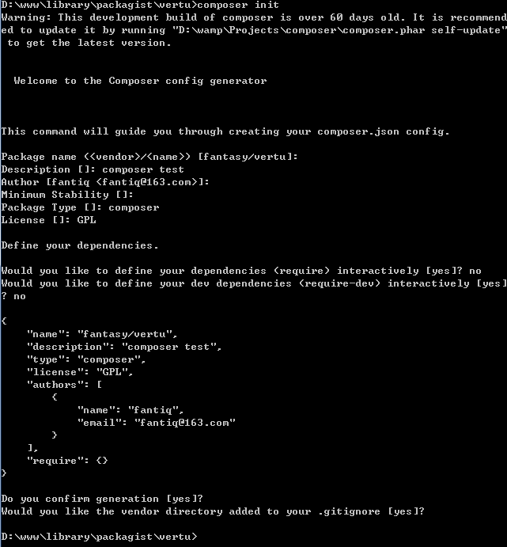

composer使用指南
composer 是php中经常使用的包管理器 日常使用中也存在很多使用的注意事项
这里总结下使用composer比较实用的知识点
1. 实现原理
composer 是一个包管理工具 如同nodejs中的npm 如同ruby中的gem。composer 的原理其实就是从github上面下载这些软件包 但是这些软件包文件夹的组织结构 分支管理 版本定义 各不相同 ， composer做为各个软件包到达用户的统一入口门面 作用就是规范统一各个软件包的组织形式
composer运行原理如下图

每个github上面的包 都要打包成固定格式上传到 packagist.org 才能被composer客户端下载到
客户端通过包的别名 去 packagist.org 查到对应版本的软件包在github上的下载地址
查到后将软件包源代码下载到本地 并会 更新本地的 autoload 文件
客户端的实现都是通过一个 composer.phar 来实现的 里面的实现代码是php 所以需要php来解释执行
2. 安装
php 要开启 openssl 扩展(composer文件的下载 是 https 协议)
windows
通过php函数下载安装文件 https://getcomposer.org/installer 并通过php来执行下载的文件将 composer.phar 下载到本地
制作执行脚本 composer.bat 并将这个文件所在目录添加到系统环境变量path中
这样就可以在cmd中直接执行composer命令了1
2
3
4# 下载 composer.phar
php -r "readfile('https://getcomposer.org/installer');" | php
# 添加到系统
echo @php "%~dp0composer.phar" %* > composer.bat
*unix
1 |
|
3. 使用
软件包的安装是通过 composer.json 中定义的 软件包以及版本 进行下载安装的
一个简单的composer.json 文件1
2
3
4
5
6
7{
"require": {
"包名称1": "版本1",
"包名称2": "版本2",
.......
}
}
安装软件包
在当前文件夹执行安装命令1
composer install
也许会等待很长时间 由于国内网络问题 需要更换成中国镜像地址才能提高工作效率
更换下载源 换源方式参考1
2
3
4
5
6
7
8
9
"repositories" : {
"packagist" : {
"type" : "composer",
"url" : "https://packagist.phpcomposer.com"
}
}
composer config -g repo.packagist composer https://packagist.phpcomposer.com
安装完成会生成一个 composer.lock 文件
因为在安装个软件包的时候我们可以指定一个具体的软件包版本 也可以指定一个版本范围 如1
2
3
4
5
6
7
8
9
pkgname:>=1.2,<1.3
pkgname:1.2.*
pkgname:~1.3
pkgname:~1.3.1
composer在安装的时候找到一个符号我们定义规则的版本进行下载 然后会把这个确定下来的版本号
记录到composer.lock文件中
当composer.lock不存在的时候composer install composer update 都会下载包文件并生成composer.lock
当composer.lock已经存在的时候composer install 只会从 composer.lock 文件中下载固定的软件版本
不会读取 composer.json 文件的内容 所以这个情况 当你需要添加新的包时候 修改composer.json
文件然后 composer install 并不会下载新的包
composer update 会从composer.json 中读取包定义 并且查询最新的版本并下载
下载完毕会重写composer.lock 文件
这样会带来一个问题就是 不同开发者 使用的包版本不一致
当我们需要添加一个新的软件包的时候需要用1
composer "包名称:版本"
这样会添加新的包规则到 composer.json composer.lock 文件 而不是重写这两个文件
4. 版本
版本号说明
一个php版本号的例子1
2
37.0.6
# 或者
7.0.6.160810_Beta2
对上面的版本号进行抽象1
A.B.C[.D_E ]
| # | 可选值 | 取值 | 名称 | 意义 |
|---|---|---|---|---|
| A | int unsigined | >0 | 主版本号/大版本号 | 框架调整 流程变更等大的变动 |
| B | int unsigined | >0 | 次版本号 | 功能的增加 完善 |
| C | int unsigined | >0 | 小版本号 | bug的修复等小修改 |
| D | ymd | 160810 | 时间 | 发布时间 |
| E | 希腊字母 | Base | - | 尚未实现功能 demo版本 |
| - | - | Alpha | - | 主功能实现 尚存在bug |
| - | - | Beta | - | 存在一些缺陷 如UI方面的调整 |
| - | - | RC | - | 发布前的一个过度版 |
| - | - | Release | - | 正式发布版 |
我们常用的一个版本定义是主版本号.次版本号.小版本号的形式
composer中版本号的定义
1. 定义具体的版本
指定下载 1.2.3 这个版本1
pkgName:1.2.3
2. 指定具体的版本范围
指定下载 大于等于 1.2 小于 1.3 的版本范围中最新版本1
pkgName:>=1.2,<1.3
3. 通配符版本
指定下载 1.2 版本下 小版本最新的版本
等效 >=1.2,<1.3
1 | pkgName:1.2.* |
4. 下一个重要版本
1 | # 等效 >=1.2,<1.3 |
5. 常用命令
1 | composer init |
6. 项目中的使用
各个开发人员 各个分支 确保包版本的一致
初始化项目代码
第一次安装包1
composer install
将 composer.json composer.lock 提交到版本库git
其他人下载代码(clone) 安装包执行1
composer install
更新/添加新的包
其中一个开发执行1
2composer "包名称:版本"
composer update "包名称:版本"
这个时候 composer.json composer.lock 都会写入这个新添加的包信息
安装后 将composer.json composer.lock 这两个文件修改提交到版本库
其他开发将这个两个文件的更新 合并到自己分支代码 执行1
composer install
这个时候是从composer.lock安装包 这样所有开发这安装的包版本是一致的
参考链接
用composer搭建内部包管理系统
a 创建私有库/包
使用github做代码仓库(vcs) 下载自建的git代码1
git clone git@github.com:fantiq/vertu.git
将项目初始化成一个 composer 包1
2
3cd vertu
composer init
# 填写基本信息 生成 `composer.json`

生成的 composer.json 文件内容1
2
3
4
5
6
7
8
9
10
11
12
13{
"name": "fantasy/vertu",
"description": "composer test",
"type": "composer",
"license": "GPL",
"authors": [
{
"name": "fantiq",
"email": "fantiq@163.com"
}
],
"require": {}
}
库的配置 参考链接
创建开发分支 创建发行版本 提交版本库1
2
3
4
5
6
7
8
9
10
11
12
13
14
15
16git add .
git commit -m '增加composer配置文件'
git push origin master
# 以版本号(无小版本号) 创建分支 composer会自动将这些分支识别成开发版本
git branch 1.0
git push origin 1.0
git branch 1.1
git push origin 1.1
git branch 1.2
git push origin 1.2
# 以版本号创建 标签 github会对应生成release 并且会自动打包代码
# composer下载的正式版就是这些tag打包的文件
git tag v1.0.3
git tag v1.1.5
git tag v1.2.1
git push origin --tags
b 搭建本地资源库
本地资源库主要的是 packages.json 文件的生成 可以借组 satis 来实现1
2
3
4
5
6
7
8
composer create-project composer/satis --stability=dev
php /satis/bin/satis init satis.json
Repository name: test pkg
Home page: http://packagist.dev
上面命令会生成配置文件 satis.json
文件内容大致如下1
2
3
4
5
6
7
8
9
10
11
12
13
14
15
16
17{
"name" : "自定义资源包名称",
"homepage" : "资源包域名",
# 定义资源查询地址 读取对应地址的 composer.json 文件 解析出包的内容
"repositories" : [
{
"type" : "cvs",
"url" : "git@github.com:fantiq/vertu.git"
}
],
"require" : {
# "包名" : "需要下载的版本"
"fantiq/vertu" : "*"
},
# 下载所有
"require-all" : true
}
生成资源库文件1
php satis/bin/satis build satis.json public/
通过http服务器 将配置的资源库域名指向上面文件生成的目录 public
c 从自建资源库 下载 私有包
1 | composer.json |
原理 ：
当客户端使用composer下载的时候会先从composer.json 文件中寻找下载源列表1
2
3
4
5repositories : [
{"type":"composer", "url":"http://example.org/1"}
{"type":"composer", "url":"http://example.org/2"}
...
]
composer会按下载源的顺序寻找要下载的软件包 都找不到 才会通过全局下载源地址寻找包
下载源地址根目录都会有一个packages.json 文件 软件包下载地址就是从这个文件中查找的
服务端 资源库
官方资源库
中国镜像资源库
自建私有资源库
packages.json
1 | { |
客户端 包/库
包/库 <- 资源库 <- 库
composer.json
库 : 一个可以提供给其他包通过composer 下载来使用的 包 , 库可以依赖其他的库
包 : 需要使用其他的库 但是不对其他的包提供服务, 包是一个私有项目
库的composer.json 文件中需要使用 name 声明库名称
包的composer.json 文件中仅仅使用 require 声明依赖
composer.json 文件结构说明
说明 json格式中是不支持注释的书写的 这里写的注释只是为了方便说明
1 | { |